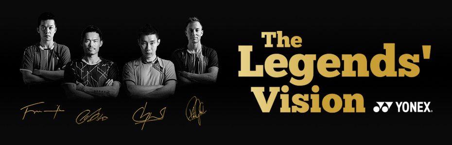

Basically a stroke is the swing motion of your racket arm. It is not a badminton shot. However you’ll need to perform these strokes to hit certain shots.
The power of any badminton shot comes from how well you perform your strokes (swing motion). A beginner should FIRST learn how to perform the CORRECT strokes.
types of strokes
Overhead Forehand Stroke.
Overhead Backhand Stroke.
Underarm Forehand Stroke.
Underarm Backhand Stroke.